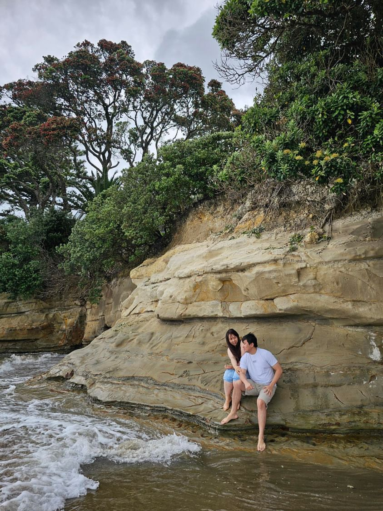
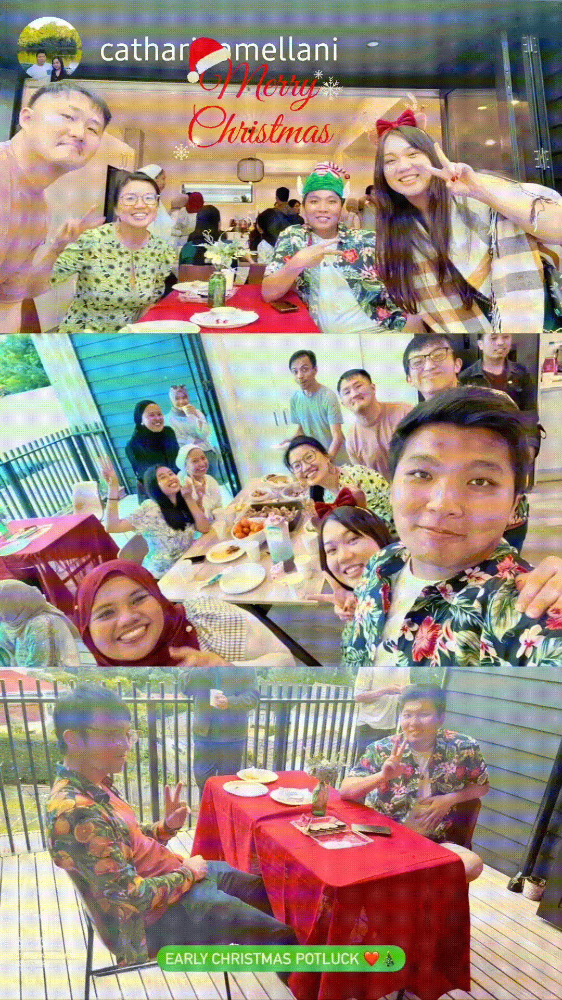
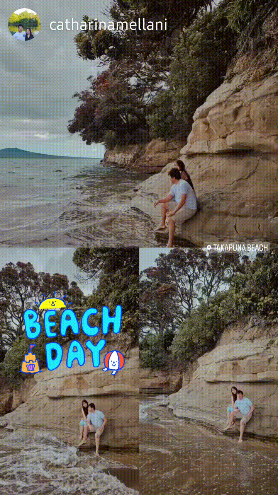
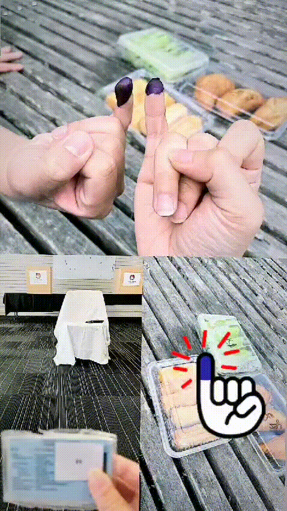

Happy Valentine's Day
Dear Catharina Mellani,
- 
2024
New Things
Apakah kamu sudah merasa bosan? wkwkwkw. Di bulan ini kita melakukan rutinitas baru. Kita mulai main badminton bersama Brandon dan Keilin. Akhirnya setelah sekian lama jadi wacana, terwujudkan juga. Kita juga sudah bikin rencana untuk ketemuan sama temenmu di auckland. Kita pergi makan, belanja sampe pulang stress" sendiri karena uang pada habis. Tapi gpp selama ada kamu aku masih bertahan (bisa minjem duit). Kita di auckland makan all you can eat, makan makanan indonesia yang mahal (padahal di Indo cuman 20rban), pergi kepantai untuk foto prewed :). Di akhir bulannya juga ngga kalah asik, kita pergi ngedate dua kali dan ditutupi dengan pergi ke Auckland. Serunya pergi ke Temple di akhir tahun, mungkin setelah itu kamu mau login?

Nadjwa's Home
First Badminton

Prewed???
2024
Start of New Year
Lumayan lah buat semangat kita awali tahun di Auckland. Truss pergi ke pantai buat post story roti sobekku :). Kita juga pertama kali testing gmn kamera yang kita beli. Untung yang foto pro yakan, jadi hasilnya bagus" wkwkkwkww. Bulan ini kita juga pergi ke garden cuman datengnya waktu ramai dan panas, jadi kurang nikmat. Disini aku dapet konten buat posting ig setelah sekian lama ya kan wkwkwkwkk. Seneng si akhirnya juga diajak pergi berdua yakan, Biasanya sampe berlumut aku ditinggal dirumah. Truss akhir bulannya pergi kita berry picking. Seru ya, baru pertama kali aku makan berry yang dari tanamannya langsung. Enak si, tapi asem. Hari ini juga anklemu rusak :) gmn ya, jadinya aku jadi babu :).

Roti Sobek
Ez First Try
Kecut, Ngga enak
2024
Waktunya Bikin Website Lagi
Welcome Back to our Valentineeeeee. Walaupun awal tahun diawali dengan beberapa hal yang menyakitkan seperti kedua kakimu, aku tetap menikmatinya bersamamu. Waktu berjalan dengan cepat, ngga kerasa sudah valentine yang kedua. Sehari-hari kita stress dan seneng bersama. aku ngga tau kalau kamu ngga disini aku jadi apa. Aku juga ngga mau memikirkan itu, tapi aku seneng kamu mau menemaniku walaupun aku hanya seorang mahasiswa. Thank you for being there when I'm sick and sad. Thank you for all your effort, all your love, and all your food. Sekarang aku sudah tambah gendutan berkat kamu :). Semoga kita kedepannya semakin kompak dan mengenal satu sama lain lebih dalam. Love you, can't wait for the next event. See you later!!!

Eh salah coblos